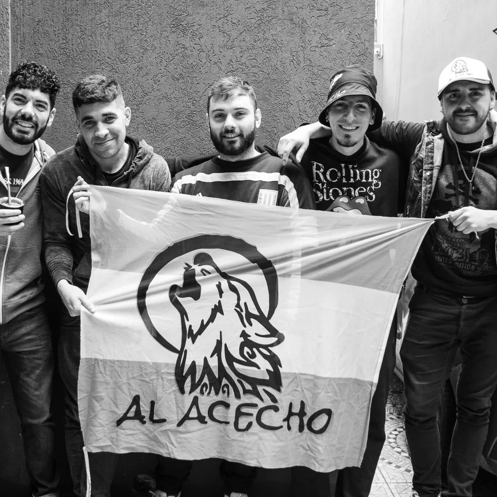
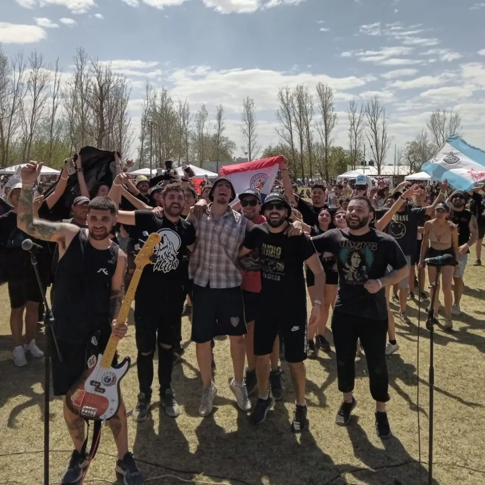

Barrio de Liniers. En el mes de Diciembre de 1997 nace la banda. Tomando como
punto de partida el rock, Al Acecho incorpora distintos ritmos como el samba, el reggae y el ska, dándoles su
propia identidad en la interpretación de cada canción. La formación comienza a tener diferencias tanto
musicales como personales, por lo que se separa hasta fines del año 2001. En este año parte de los integrantes
deciden reorganizarse y volver a darle vida a Al Acecho.
Graban en 2003 de manera independiente y con la producción artística de Lolo Micucci, “Carnaval para tu
Desconsuelo”, su primer disco. Con este material, el grupo comienza a tener difusión en distintas radios,
medios gráficos y televisivos. La banda presenta el álbum junto a Aztecas Tupro.
Tocan durante 15 días por la Costa Atlántica, logrando una gran repercusión. Durante ese año, la banda realiza
más de 70 shows en Capital Federal y en distintas localidades de la Provincia de Buenos Aires. A fines de año
se edita, en forma independiente, el compilado “El Colectivo II” en el cual Al ACecho aporta los temas
“Carnaval para tu Desconsuelo” y “Puede Ser”.
Durante Enero de 2005 la banda vuelve a la Costa Atlántica junto a Aztecas Tupro en la Gira “Sin Fronteras”,
con más de 20 presentaciones en 15 días, cerrando la misma con un show a sala llena.

Es un disco donde las letras viscerales y la fiesta de siempre conviven a lo largo de
las 13 canciones compuestas por la banda. El Cd reconoce el espíritu que genera en el vivo, atravesando
diferentes estilos musicales con la impronta que los caracteriza: rock, reggae, ska, folklore...
En 2009, la banda edita "Naturaleza revivir", compuesto por Cd+Dvd.En 2010, vuelve a soprender con
"Singularmente", compuesto por 11 nuevas canciones.
El 10 de mayo de 2013 Hernán Saravia en voz, Federico "Yaku" Quiroga en voces, Adrián "Galle" Brunetto en
guitarra, Ariel Viale en batería y percusión, Gustavo Vitale en percusión, Luciano Katz en guitarra, charango,
banjo y coros, Ricardo "Ruso" Jahni en bajo, Salvador Rodofili en saxo alto, tenor y acordeón y Darío Varela
en trombón, festejan la salida de un álbum recopilatorio dando un show en el Teatro Vorterix.
En octubre de 2014 presentan "El Placer De Ser", quinto álbum de estudio. El primer corte se titula
"Conciencia" y el disco cuenta con importantes colaboraciones: Edu Schmidt en "El Elegido"; Santiago Aysine de
Salta La Banca en "Hasta Que Pueda"; el bandoneonista Mariano Godoy en "La Danza de Los Perdidos"; y el
guitarrista Ramiro Smapedro en "Costumbre o Sentimiento".
Al Acecho forma de la siguiente manera: Hernán Saravia en voz líder, Federico Quiroga en voces, Ariel Viale en
batería y percusión, Luciano Katz en guitarra, charango, banjo y coros; y Ricardo "Ruso" Jahni en bajo.
Festejan 15 años de trayectoria dando un concierto el 7 de julio en el Centro Cultural San Isidro.
El 1° de diciembre de 2017 editan el sencillo "Estaré", adelantando nuevo álbum.
El 5 de enero de 2018 liberan "Cuando Se Escucha Tu Voz" y el 23 de febrero "Voy". El 4 de mayo se estrena el
single "Libres".